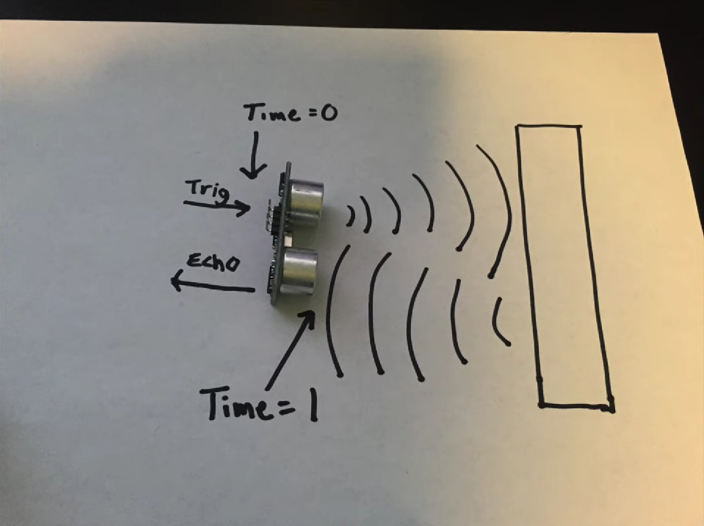
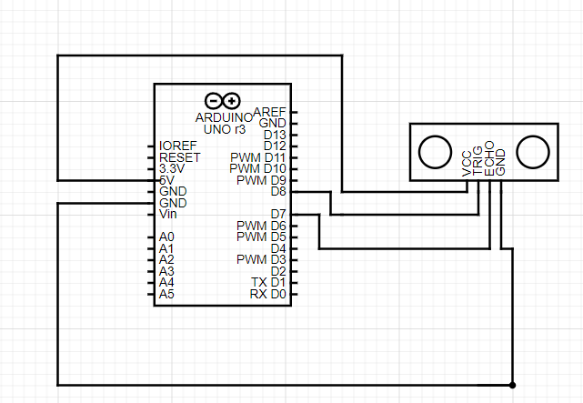
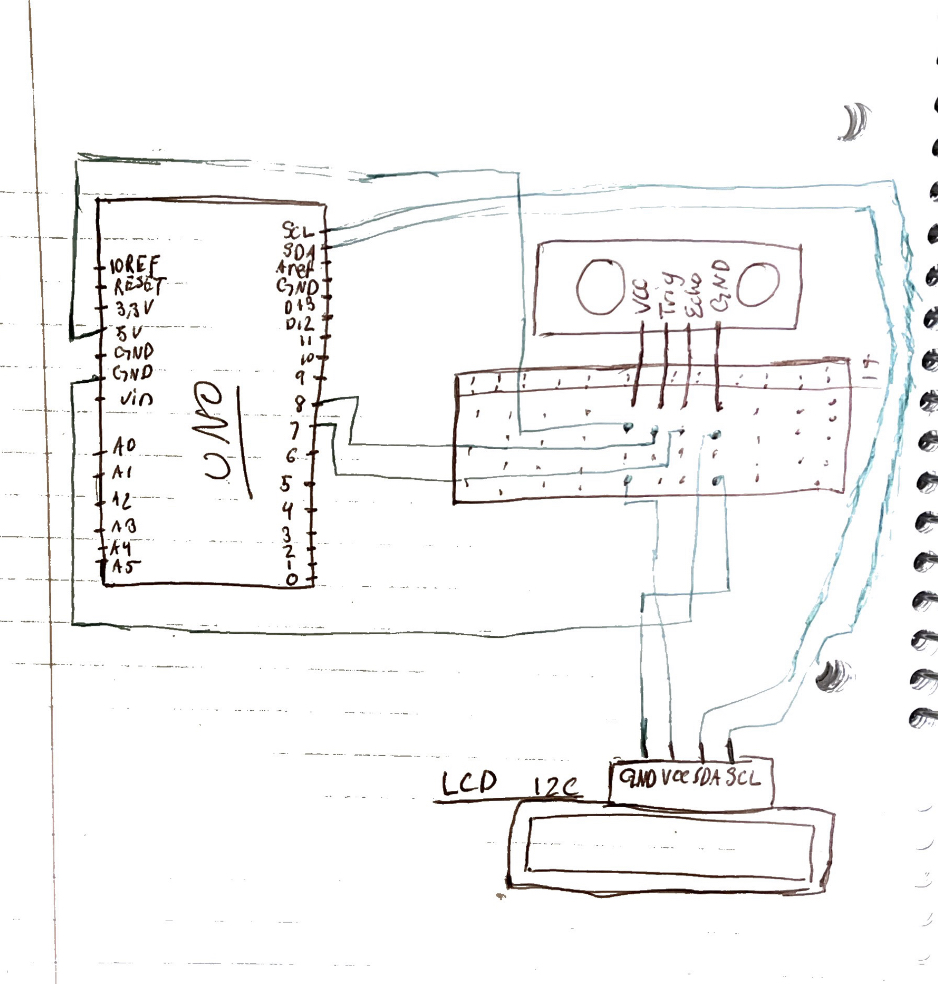
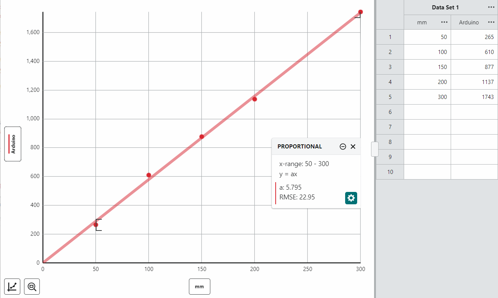

<br>
#### Week 6: Electronic Inputs
<html>
<div class="myDiv" style><h3>Week 6: Electronic Inputs</h3></div>
<div class="vidDiv">
<div class="myDiv">
<h2>The Ultrasonic ++</h2>
</div>
<img src = "https://raw.githubusercontent.com/SaiDBod/PHYS-S12-IntroToDigitalFabrication/main/06_E-Input/picsw6w7/IMG_4391.jpg" width= 400px alt = 06_EINPUT>
<img src = "https://raw.githubusercontent.com/SaiDBod/PHYS-S12-IntroToDigitalFabrication/main/06_E-Input/picsw6w7/IMG_4389.jpg" width= 400px alt = 06_EINPUT>
<img src = "https://raw.githubusercontent.com/SaiDBod/PHYS-S12-IntroToDigitalFabrication/main/06_E-Input/picsw6w7/IMG_4388.jpg" width= 400px alt = 06_EINPUT>
<div class="myDiv">
For the Ultrasonic Sensor, Both the GND and VCC ports were connected to Ground and 5V pin respectively on the Arduino UNO. The two middle pins of the sensor called "Echo" and "Trig" responsible for the function of the Ultrasonic Sensor.

<br> The Trig Sends the Ultrasonic pulse and The Echo receives this pulse after it echoes off an object. So each of these pins must be connected to one of the PWM pins. In this case, they are connected to pins 7 & 8. Afterward, the Sensor must be coded for it to function.
</div>


<div class="myDiv">
The LCD with an I2C can also be added as an output to display values like the distance measured by the Ultrasonic Sensor. Simply connect the respective SDA and SCL pins to the Arduino and the supply Power through VCC → 5V and GND → Ground. <br><br> The Above graph shows the proportional relationship between the Arduino values for distance and the in-real-life value in mm
</div>
<div><video height="500" controls>
<source src="./IMG_4432.mp4" type=video/mp4>
</video></div>
<div class="myDiv">
And also this video
</div>
<img src = "https://raw.githubusercontent.com/SaiDBod/PHYS-S12-IntroToDigitalFabrication/main/06_E-Input/picsw6w7/IMG_4466.jpg" width= 400px alt = 05_Joint>
<img src = "https://raw.githubusercontent.com/SaiDBod/PHYS-S12-IntroToDigitalFabrication/main/06_E-Input/picsw6w7/IMG_4469.jpg" width= 400px alt = 05_Joint>
<img src = "https://raw.githubusercontent.com/SaiDBod/PHYS-S12-IntroToDigitalFabrication/main/06_E-Input/picsw6w7/IMG_4471.jpg" width= 400px alt = 05_Joint>
<div class="myDiv">
Insert Making the Homemade Capicitor sensor Documentation
</div>
<img src = "https://raw.githubusercontent.com/SaiDBod/PHYS-S12-IntroToDigitalFabrication/main/05_3DPrinting/w5images_3D/JointCADstep8.png" width= 500px alt = 05_Joint>
<img src = "https://raw.githubusercontent.com/SaiDBod/PHYS-S12-IntroToDigitalFabrication/main/05_3DPrinting/w5images_3D/JointCADstep9.png" width= 500px alt = 05_Joint>
<div class="myDiv">
Add graphs and schematic of (maybe?) everything
<br><br>
Explain which pins are connected to what
</div>
</div><br>
<div class="vidDiv">
<div class="myDiv">
<h2>What did I learn?</h2><br>
<h5> I learned the restrictions of 3D printing and how to use Fusion 360 to print multiple bodies that can move. I also learned when 3D scanning is applicable and when to use, or not use, the tool depending on the size, lighting, and color of the object.</h5><br>
</div>
<br>
<div class="myDiv">
<h2>What can I do better next time?</h2><br>
<h5>Next time I make a joint, I should fillet the edges for smoother movement. </h5><br>
</div>
</div>